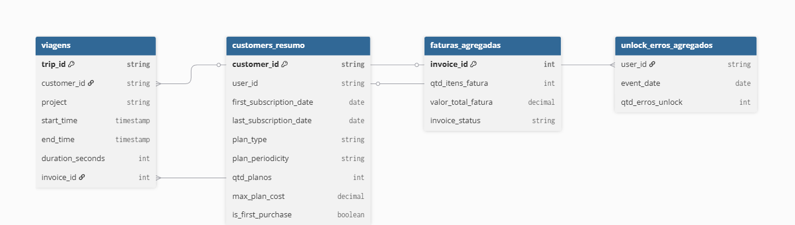
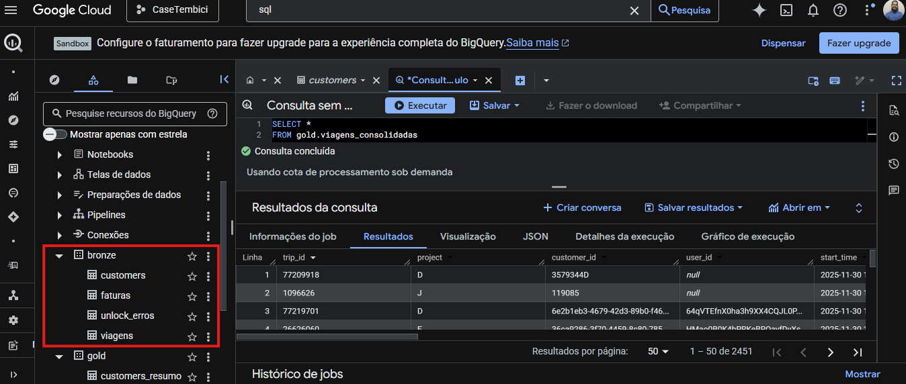
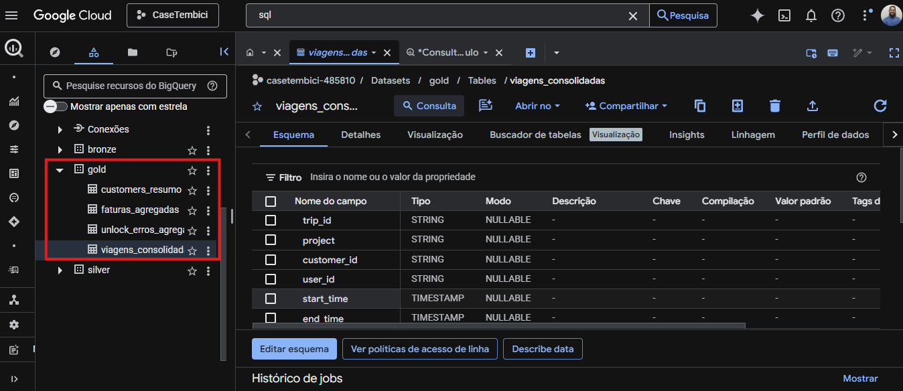

Este projeto teve início a partir da necessidade de consolidar múltiplas fontes de dados relacionadas à operação de um sistema de bicicletas compartilhadas, com o objetivo de criar uma base única e escalável para análises recorrentes.
As fontes de dados contemplam informações sobre:
Viagens realizadas
Clientes e assinaturas
Faturas e cobranças
Erros operacionais (unlock)
O objetivo principal foi estruturar um pipeline analítico completo, desde a ingestão dos dados brutos até a disponibilização de indicadores estratégicos de utilização, desempenho financeiro e qualidade operacional.
Arquitetura de Dados e Pipeline Analítico
O pipeline de dados foi estruturado seguindo a arquitetura Medallion (Bronze, Silver e Gold), permitindo a separação entre ingestão, tratamento e consumo dos dados.
Essa abordagem permite: - Manutenção do pipeline - Escalabilidade - Auditoria e reprocessamento - Evolução do modelo analítico
A figura abaixo apresenta o modelo lógico da camada analítica (Gold), destacando as entidades principais, suas chaves e os relacionamentos utilizados para consolidar a base final de análise.

Modelo lógico da camada Gold
A tabela viagens atua como a tabela fato central do modelo, contendo uma linha por viagem como unidade principal de análise.
As tabelas auxiliares foram integradas da seguinte forma:
customers_resumo: adiciona informações consolidadas de clientes e assinaturas, evitando duplicações e preservando histórico relevante;
faturas_agregadas: garante consistência financeira ao consolidar múltiplas linhas de cobrança em uma única fatura;
unlock_erros_agregados: fornece métricas operacionais relacionadas à qualidade do serviço, agregadas por usuário e data.
Camada Bronze: Ingestão dos Dados Brutos
A camada Bronze representa a etapa de ingestão dos dados brutos fornecidos no desafio. Os arquivos foram carregados no Google BigQuery preservando sua estrutura original, sem aplicação de regras de negócio ou transformações complexas. Eventuais inconsistências de tipagem, valores ausentes e formatação foram mantidas intencionalmente, garantindo que o tratamento ocorresse de forma controlada nas camadas posteriores.

Estrutura Camada Bronze no BigQuery
Camada Silver: Padronização e Tratamento dos Dados
Nesta camada, os dados foram padronizados com foco em:
Correção de tipos
Normalização de identificadores
Conversão de datas e timestamps
Garantia da granularidade original
Estrutura Camada Silver no BigQuery
Tabela de Viagens
Mostar código SQL
-- Tabela de viagensCREATETABLE silver.viagens ASSELECTCAST(trip AS STRING) AS trip_id,CAST(customer AS STRING) AS customer_id, project,TIMESTAMP(start_time) AS start_time,TIMESTAMP(end_time) AS end_time,CAST(duration_seconds AS INT64) AS duration_seconds,CAST(invoice_id AS INT64) AS invoice_idFROM bronze.viagensWHERE trip ISNOTNULL;
Padroniza a tabela de viagens, garantindo tipos corretos para identificadores e timestamps. A granularidade de uma linha por viagem é preservada, e registros inválidos são descartados.
Tabela de Customers:
Mostar código SQL
-- Tabela de CustomersCREATETABLE silver.customers ASSELECTCAST(customer AS STRING) AS customer_id,CAST(user_id AS STRING) AS user_id, project,DATE(subscription_start_date) AS subscription_start_date,DATE(subscription_end_date) AS subscription_end_date, plan_type, plan_periodicity, is_customer_first_purchase AS is_first_purchase, SAFE_CAST(is_customer_returning AS BOOL) AS is_customer_returning,CAST(plan_cost ASNUMERIC) AS plan_cost,DATE(date_joined) AS date_joinedFROM bronze.customers;
Realiza a padronização dos dados de clientes e assinaturas, tratando inconsistências de tipagem (especialmente identificadores) e convertendo datas e valores monetários para formatos adequados.
Tabela de Faturas
Mostar código SQL
-- Tabela de FaturasCREATETABLE silver.faturas ASSELECTCAST(invoice_id AS INT64) AS invoice_id,CAST(invoice_line_id AS INT64) AS invoice_line_id, project, invoice_status,CAST(usage_fee ASNUMERIC) AS usage_feeFROM bronze.faturas;
Padroniza os dados financeiros, mantendo a granularidade de linha de cobrança e preparando os valores para agregações financeiras na camada analítica.
Tabela de Unlock Erros
Mostar código SQL
-- Tabela de Unlock ErrosCREATETABLE silver.unlock_erros ASSELECTCAST(user_id AS STRING) AS user_id, project,TIMESTAMP(event_timestamp) AS event_timestamp, event_name, error_typeFROM bronze.unlock_erros;
Trata os registros de eventos de erro do aplicativo, convertendo timestamps e normalizando identificadores para permitir agregações operacionais posteriores.
Camada Gold: Modelagem Analítica
A camada Gold concentra as agregações e a modelagem voltada para consumo analítico, respeitando a granularidade adequada de cada entidade.

Estrutura Camada Gold no BigQuery
Clientes (resumo):
Mostar código SQL
CREATETABLE gold.customers_resumo ASSELECT customer_id, ANY_VALUE(user_id) AS user_id,MIN(subscription_start_date) AS first_subscription_date,MAX(subscription_end_date) AS last_subscription_date, ANY_VALUE(plan_type) AS plan_type, ANY_VALUE(plan_periodicity) AS plan_periodicity,COUNT(*) AS qtd_planos,MAX(plan_cost) AS max_plan_cost,MAX(is_first_purchase) AS is_first_purchaseFROM silver.customersGROUPBY customer_id;
Consolida o histórico de assinaturas em uma visão resumida por cliente, evitando duplicações e facilitando análises de perfil e comportamento.
Faturas Agregadas:
Mostar código SQL
CREATETABLE gold.faturas_agregadas ASSELECT invoice_id,COUNT(invoice_line_id) AS qtd_itens_fatura,SUM(usage_fee) AS valor_total_fatura, ANY_VALUE(invoice_status) AS invoice_statusFROM silver.faturasGROUPBY invoice_id;
Agrega os dados financeiros no nível de fatura, garantindo consistência no cálculo de receitas e evitando duplicações em análises financeiras.
Unlock Erros Agregados:
Mostar código SQL
CREATETABLE gold.unlock_erros_agregados ASSELECT user_id,DATE(event_timestamp) AS event_date,COUNT(*) AS qtd_erros_unlockFROM silver.unlock_errosGROUPBY user_id, event_date;
Resume os eventos de erro por usuário e data, criando um indicador operacional que permite monitorar a qualidade do serviço ao longo do tempo.
Cria a base analítica final, com uma linha por viagem, integrando dados operacionais, financeiros e de clientes.
Disponibilização para Análise
A base consolidada foi exportada a partir do BigQuery e utilizada como fonte para as análises exploratórias e visualizações desenvolvidas em R, apresentadas a seguir.
Os indicadores oferecem uma visão rápida e estratégica do desempenho operacional da plataforma.
Conclusão e Próximos Passos
A base analisada representa um snapshot operacional de um único dia. Dessa forma, análises temporais tradicionais (diária, semanal ou mensal) não seriam estatisticamente representativas neste contexto.
Por esse motivo, a análise foi concentrada em indicadores agregados (KPIs), que oferecem uma visão clara e objetiva da utilização do sistema, desempenho financeiro e qualidade operacional no período analisado.
Próximos Passos Sugeridos
Segmentação de usuários e planos, para identificar perfis de maior valor e padrões distintos de uso.
Modelagem preditiva de demanda, visando otimização de frota e planejamento operacional.
Análise de churn e retenção, especialmente em usuários afetados por falhas operacionais.
Monitoramento de erros, com criação de alertas para redução de impacto na experiência do usuário.